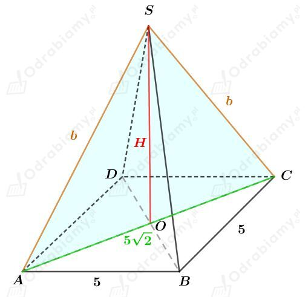
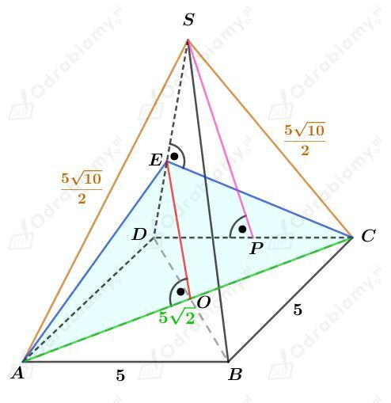
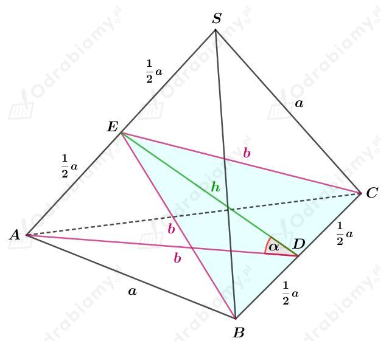
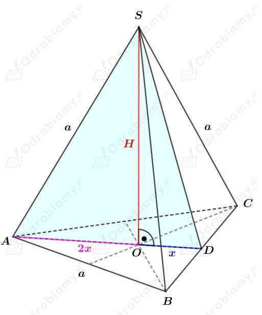

Rysunek:

Wiemy, że pole trójkąta ACS jest równe 25 cm2. Zatem mamy:
Korzystając z twierdzenia Pitagorasa dla trójkąta OCS mamy:
Rysunek:

Korzystając z twierdzenia Pitagorasa dla trójkąta PSD mamy:
Wyznaczmy pole jednej ściany bocznej. Mamy:
Mamy zatem:
Korzystając z twierdzenia Pitagorasa dla trójkąta OCE mamy:
Wyznaczmy pole otrzymanego przekroju. Mamy:
Rysunek:

Odcinki BE, CE i AD to wysokości w trójkącie równobocznym o boku długości a. Zatem
Korzystając z twierdzenia Pitagorasa dla trójkąta BDE mamy:
Korzystając z twierdzenia cosinusów dla trójkąta ADE mamy:
Korzystając z jedynki trygonometrycznej
mamy:
Rysunek:

Korzystając z twierdzenia Pitagorasa dla trójkąta AOS mamy:
Odcinek 2x stanowi 2/3 długości wysokości trójkąta równobocznego o boku długości a, więc
Z treści zadania wiemy, że pole trójkąta ADS wynosi 4√2 cm2, zatem mamy:
Obliczmy pole powierzchni podstawy tego ostrosłupa. Korzystając ze wzoru na pole trójkąta równobocznego mamy:
Obliczmy objętość tego czworościanu. Mamy: